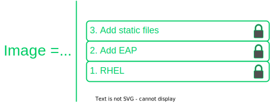
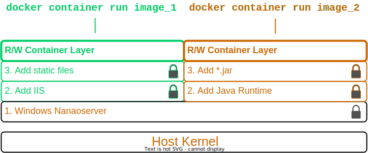
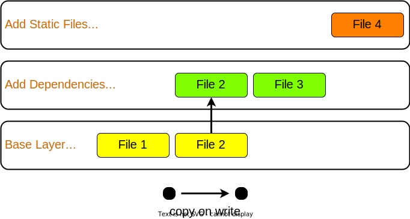
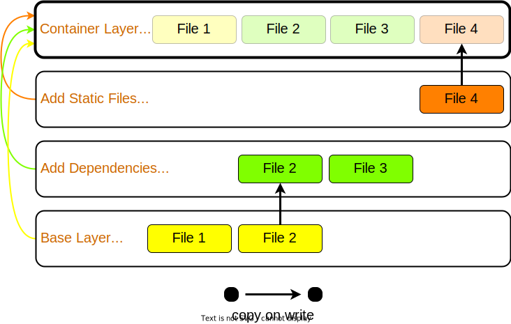
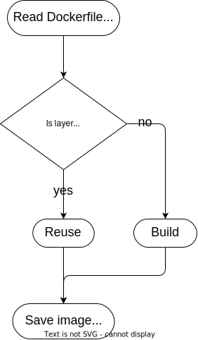

Creating Images
In our discussion of containers, we focused on how processes are isolated.
But if a process is to be truly portable, it also needs its filesystem and dependencies to come along with it.
In this module, we'll explore images in-depth, including a focus on creating and modifying images.
Discussion: Provisioning Filesystems
What are some potential difficulties with provisioning entire filesystems for containers? How can we avoid these problems?
Guide the class to thinking about some of the non-obvious nuances around building and sharing images
Obvious answer: disk and bandwidth usage
Hint questions if the class is stuck:
Are all container filesystems necessarily unique? If two containers share a filesystem, how will they remain independent? (leads to layer sharing and read-only images)
What's a simple way to minimize the risk of vulnerable components making it onto your production servers via a Docker image? (answer: don't install any component you don't absolutely need, indicates the logic of minimal images)
If containers and their filesystems are meant to move across environments like dev, testing, staging and prod without needing to be modified, how can they reflect the important differences between those environments? (leads to motivating multi-stage builds)
Learning Objectives
By the end of this module, learners will be able to
Create images via several methods
Describe the filesystem structure underlying an image
Understand the performance implications of different image design decisions
Correctly tag and namespace images for distribution on a registry
What are Images?
A filesystem for container process
Made of a stack of immutable layers
Start with a base image
New layer for each change

Images are composed in layers; each layer consists of a bunch of files that capture how this layer adapts the one beneath it.
Note: On Windows there are also Windows registy entries that are captured as part of the layer.
These stacks of layers always start with a base image, which typically captures only the base operating system for this image.
each subsequent image layer captures sequential changes to the image.
The Writable Container Layer

Starting a container essentially adds a single writable layer to the image stack; since Docker is just adding this one thin layer, container startup is very fast and resource efficient.
Any manipulations of the filesystem a container does is written only to this R/W layer; all image layers are always read-only.
When a container edits a file from the base image, then and only then is that file copied to the R/W layer; this is what is meant by Docker's 'copy on write' filesystem; this also implies that the copy of a file that is visible in a running container is whichever copy of that file sits highest in the stack of filesystem layers.
Images: Copy on Write

The final product is composed per this diagram, via what we call a 'copy on write' composition strategy
Each time a layer is added, only files that are changed are copied up to the next layer; each of these layers actually exists as a directory on your host machine.
Linux Containers: Union FS

When creating a container on Linux, a R/W container layer is created, and all these filesystem layers are composed via a union filesystem mount. This assembles the image layers into a unified filesystem similar to superimposing a stack of overhead transparencies on top of each other; files on higher layers obscure earlier versions of themselves on lower layers.
When a container modifies a file from the image, it performs the same copy on write action as above, into the R/W container layer.
Creating Images
Three methods:
Commit the R/W container layer as a new R/O image layer.Define new layers to add to a starting image in a Dockerfile .
Import a tarball into Docker as a standalone base layer.
Committing Container Changes
docker container commitPro: build images interactively
Con: hard to reproduce or audit; avoid this in practice.
One way of building up images is to save the container layer as a new image layer
This is fine for experiments, but it's really something best avoided in the development of production grade code, since it isn't easily auditable, reproducible or automated.
Dockerfiles
Content manifest
Provides image layer documentation
Enables automation (CI/CD)
Interactive image creation is good for tinkering, but its main drawback is that it doesn't produce an artifact describing the steps to create the image in a machine-readable way.
Therefore, there's no way to build images this way as part of a CI/CD chain, and it can be hard to audit what exactly is in the image.
A Dockerfile is essentially a recipe to build an image, layer by layer. This can be ingested in build processes and CI/CD pipelines, and preserves a record of all the steps taken to create an image.
Dockerfiles
FROM command defines base image.Each subsequent command adds a layer or metadata
docker image build ... builds image from Dockerfile
# Comments begin with the pound sign
FROM ubuntu:16.04
RUN apt-get update && apt-get install -y wget
ADD /data /myapp/data
...
Note that dockerfiles for linux and windows are syntactically identical; they use different images for their bases and run different processes at each step, but the way we specify our image recipe doesn't change at all.
See the demo
In the Exercises book.
Work through
Interactive Image Creation
Creating Images with Dockerfiles (1/2)
in the Exercises book.
Build Cache

After completion, the resulting image layer is labeled with a hash of the content of all current image layers in the stack.
Layers are fetched from the cache via the hash label affixed to that layer the first time it was created.
Q: Why is a hash for a layer computed based on the entire image? Why not just that layer?
A: A layer can't be reused unless all layers under it are the same; put another way, the effect of whatever command generated the layer might be different depending on substrate layers.
The upshot being that the builder will stop using the cache at the first change in the Dockerfile.
CMD and ENTRYPOINT
Recall all containers run a process as their PID 1
CMD and ENTRYPOINT allow us to specify default processes.
Another pair of helpful commands in Dockerfiles are CMD and ENTRYPOINT
These are used for specifying default processes and options to run in containers created from this image.
CMD and ENTRYPOINT
CMD alone: default command and list of parameters.CMD + ENTRYPOINT: ENTRYPOINT provides command, CMD provides default parameters.CMD overridden by command arguments to docker container run
ENTRYPOINT overridden via --entrypoint flag to docker container run.
Oftentimes images are designed to do exactly one thing; CMD and ENTRYPOINT allow you to bake that intention right into the image, by pre-specifying that command.
The difference between the two is essentially in how you want to override these defaults
Using them together makes your container feel a lot like an executable; arguments (defaulted by CMD) will be overridden by command line args, but the executable defined by ENTRYPOINT will not.
Shell vs. exec format
# Shell form
CMD sudo -u ${USER} java ...
# Exec form
CMD ["sudo", "-u", "jdoe", "java", ...]
CMD, ENTRYPOINT and RUN commands can use either exec or shell syntax
If we have a command like this on Windows `powershell New-Item c:\test` then if it is in declared in shell form what is executed is in reality `cmd /S /C powershell New-Item c:\test` whilst in exec form the command is executed as is without the use of the shell (cmd in this case). The analogous is true for Linux containers.
exec is generally preferred for ENTRYPOINT, since it preserves the ability to override options.
subtle differences:
Shell form allows for the parsing of variables like CMD sudo -u ${USER} java ... Exec form can run in a container with no shell; shell form always runs via /bin/sh -cShell form for ENTRYPOINT prevents options from being overridden by CMD or docker container run.
Note that exec form is formal JSON - double quotes mandatory.
When using the shell form, the specified binary is executed with an invocation of the shell using /bin/sh -c, which means the process running as PID 1 is the /bin/sh executable.
Work through
Creating Images with Dockerfiles (2/2)
In the Exercises book.
COPY and ADD commands
COPY copies files from build context to image
COPY <src> <dest>
ADD can also untar * or fetch URLs .
* Linux containers only!
In both cases
create checksum for files added
log checksum in build cache
cache invalidated if checksum changed
COPY and ADD add files from the local filesystem to the image
Build process uses a checksum against the files to be added to bust the cache if those files have changed
Note that ADD can also copy files from a URL and for Linux containers only(!) untar files upon copying them into the image.
Dockerfile Command Roundup
FROM : base image to start from (usually OS)RUN : run a command in the environment defined so farCMD and ENTRYPOINT : define default behaviorCOPY and ADD : copy files into container
Many more Dockerfile commands are available; see the docs at
We've seen the greatest hits of Dockerfile commands, but there are tons more; see the docs.
Advanced Dockerfile Construction
How can we build images that are
Lightweight
Secure
Minimal build times
Now that we've seen the basics of image construction with Dockerfiles, we'd like to investigate best practices around image construction
Our priorities for image creation are size, security, and build times.
Size and security can be addressed by similar techniques; making sure we only install things we absolutely need in our image not only keeps the image size down, but avoids exposing ourselves to potential vulnerabilities in superfluous components.
Also during the course of development, we'd like build times to be as fast as possible, either by leveraging the cache we've already seen, or by parallelizing parts of the build process.
For the next part of this chapter, we'll look at some advanced techniques for achieving all of these.
The Scratch Image
An "empty" image
Can't be pulled
Doesn't create a layer
Used for building images not based on any pre-existing image
Linux only
FROM scratch
ADD centos-7-docker.tar.xz /
LABEL org.label-schema.schema-version="1.0" \
org.label-schema.name="CentOS Base Image" \
org.label-schema.vendor="CentOS" \
org.label-schema.license="GPLv2" \
org.label-schema.build-date="20181205"
CMD ["/bin/bash"]
The scratch image is an empty image that exists in Docker Hub, but has no tags and can't be pulled.
When used in a Dockerfile, the line `FROM scratch` doesn't add any layer to the image. The next command in the Dockerfile will be the first filesystem layer.
The scratch image is used typically to build base images with as few components as possible installed in them, to give the smallest possible attack surface to our images.
Multi-Stage Builds
Hello World, in C:
FROM alpine:3.5
RUN apk update && \
apk add --update alpine-sdk
RUN mkdir /app
WORKDIR /app
ADD hello.c /app
RUN mkdir bin
RUN gcc -Wall hello.c -o bin/hello
CMD /app/bin/hello
Builds to:
$ docker image ls hwc
REPOSITORY TAG IMAGE ID CREATED SIZE
hwc latest 142c29686b6a 15 hours ago 184 MB
Here's a Dockerization of hello world, in C. By now, we should recognize the steps: we start from an operating system, use RUN to install dependencies, ADD to import files from our host machine, and define some default behavior with CMD.
There's just one problem: we have successfully made a hello world application in a mere 184 MB. Giant images are at best slow to start, and can have security problems depending on what unnecessary components have been included.
Most of this bloat is due to things we don't actually need in production: compilers, developer tools and the like.
The Docker image builder implements Multi Stage Builds to allow you to create executables, then throw away the scaffolding needed to compile them, leaving you with a fast, lightweight image.
Multi-Stage Builds
Hello World, lightweight:
# Full SDK version (built and discarded)
FROM alpine:3.5 AS build
RUN apk update && \
apk add --update alpine-sdk
RUN mkdir /app
WORKDIR /app
ADD hello.c /app
RUN mkdir bin
RUN gcc -Wall hello.c -o bin/hello
# Lightweight image returned as final product
FROM alpine:3.5
COPY --from=build /app/bin/hello /app/hello
CMD /app/hello
Builds to:
$ docker image ls hwc
REPOSITORY TAG IMAGE ID CREATED SIZE
hwc latest 5d925cfc9c96 39 seconds ago 4MB
To make a lightweight version of hello world with all the developer tools stripped out, we start with the exact same Dockerfile, but we've added the AS clause to the FROM statement.
Then, we've added a second stanza, where we start from the same OS, but instead of installing the developer's kit, we use the --from flag with COPY to reference the 'build' image described above, and copy just the final executable over into our final image.
The --from flag to COPY can also also specify an earlier image by index counting from 0 (so --from=0 would have had the same effect in the second stanza above).
Note that it kind of looks like we built two images here - in fact, only the final FROM stanza results in an image on disk. All previous stanzas create cached image layers, but no final image.
Build Targets
Dockerfile
FROM <base image> as base
...
FROM <foo image> as foo
...
FROM <bar image> as bar
...
FROM alpine:3.4
...
COPY --from foo ...
COPY --from bar ...
... Building the image
docker image build --target <name> ...
We can also build intermediate images by specifying the "--target" parameter with the name of the intermediate build.
If no "--target" is provided then the "docker image build" command always builds only the last image (the one starting with the last FROM statement in the Dockerfile)
The <name> of an intermediate image is either the index of the FROM in the Dockerfile or the alias provided in the FROM statement (e.g. FROM base as test - in that case <name> would be "test")
Work through
In the Exercises book.
Image Construction Best Practices
Start with official images
Use multi-stage builds to drop compilers, SDKs...
More layers leverage the cache...
...but fewer layers perform better.
Now that we have the mechanics of making Dockerfiles, there's also a number of optional best practices to consider.
Base your images off of official images whenever possible; you can recognize these on Docker Hub as they don't have an explicit namespace like vendor/product; they're just single-word names, possibly with a tag. These are all battle-tested images produced in collaboration between the product vendors and Docker, and are scanned regularly for security vulnerabilities.
Take advantage of multi-stage builds; these allow you to drop unnecessary layers, which will result in faster container start times, and less components that potentially inject vulnerabilities into your containers.
Deciding how many layers to build an image out of depends on your priorities. The fundamental tension is that more layers leverage the cache better (since hopefully you don't invalidate the cache until you're most of the way through your Dockerfile), but this creates more overhead at container runtime, which you may wish to avoid for production images.
Development: More Layers
Bad caching:
FROM python:3.5-alpine
RUN mkdir /app
COPY /mypy /app/
RUN pip install -r app/reqs.txt
...
Good caching:
FROM python:3.5-alpine
RUN mkdir /app
COPY /mypy/reqs.txt /app/
RUN pip install -r app/reqs.txt
COPY /mypy /app/
...
A common best practice during development is to split up oft-changing and rarely-changing elements into different layers. Move the rarely-changing parts as high as possible in the Dockerfile, so they don't have to be redone when the frequently changing parts are changed.
In this case, we save ourselves from redoing the `pip install` when anything other than the requirements file changes.
Production: Less Layers
Once it's time to go to production (or even to start CI/CD), we don't care so much about build times and caching. The image is nominally built - what matters is performance.
One way to compress everything into a single layer is to export a container as a tarball, and reimport it as a new, single layer image. This completely destroys the ability of containers to share layers, though
Another method is the experimental squash flag, which combines all non-base layers into a single layer. Now the base layer remains sharable, and our production image is only two layers.
One technique for getting the best of both worlds when layer sharing is important is to use the first method to collapse all widely shared layers into a common base image, and then use the --squash flag on subsequent builds to squash the application-unique layers into a single application layer.
Best Practice: Patching & Updates
When revving an image, don't just apply patches on top of old images. If it's your base layer that's been revved, the vendor will likely release a new image corresponding to the new software version; update your Dockerfile and rebuild your image with the new base layer.
The same logic holds true for updating other image layers; rebuild your image from its Dockerfile, pulling in the desired versions of your dependencies, rather than just installing patches on top of patches like you would for software installed on the host.
Remember copy on write: when you apply a patch, it doesn't overwrite whatever its upgrading; all versions of all files are persisted in their entirety in an ever-growing image layer stack. This will bloat your images and slow down their performance.
Image Tags
Optional string after image name, separated by :
:latest by defaultSame image with two tags shares same ID, image layers:
$ docker image ls centos*
REPOSITORY TAG IMAGE ID CREATED SIZE
centos 7 8140d0c64310 7 days ago 193 MB
$ docker image tag centos:7 centos:mytag
$ docker image ls centos*
REPOSITORY TAG IMAGE ID CREATED SIZE
centos 7 8140d0c64310 7 days ago 193 MB
centos mytag 8140d0c64310 7 days ago 193 MB
In addition to the name of the image, images can be given an optional tag.
Tags are often used to capture version number or base image distro.
The tag will default to `latest` if omitted.
Note that tags are essentially just pointers to an image which is uniquely identified by its ID; creating another tag pointing to the same image doesn't duplicate the image on disk, but just creates another reference to it.
Image Namespaces
Images exist in one of three namespaces:
Root (ubuntu, nginx, mongo, mysql, ...)
User / Org (jdoe/myapp:1.1,
microsoft/nanoserver:latest, ...)
Registry (FQDN/jdoe/myapp:1.1, ...)
Certified images produced in collaboration between Docker and third-party software vendors are given single-word names in the root namespace.
Images meant to be shared on hub.docker.com are namespaced via the owning account, then the image name
Images stored in docker trusted registry are similar to hub.docker.com names, but prefixed with the FQDN of the registry.
Image Tagging & Namespacing
Images can be tagged on build or retagged at any time.
Note that image layers are only stored once per machine; retagging or renaming an image does not duplicate the image layer.
Always remember that an image must be namespaced correctly to push to a registry, whether it's hub.docker.com or Docker Trusted Registry.
Finally, remember that docker registries all use content addressable storage models; image names and tags are really just human-friendly pointers to image IDs, which serve as the true address for immutable image information. As such, it is a good security strategy to pull by sha and not by tag; then you always know exactly what you're getting.
Sharing Images
Docker Hub
Provides certified commercial and free software distributed as Docker Images
Shares community-generated images and content
Docker Hub allows you to access and share your public repositories with the Docker community at large. You can download two types of images from the Docker Hub: Docker Verified Images and Community/Hub images.
Docker Hub is a cloud-based registry service which allows you to link to code repositories, build your images and test them, stores manually pushed images, and links to Docker Cloud so you can deploy images to your hosts. If you have built images, you can push them to a Docker Hub repository that you add to your Docker Hub user or organization account.
Work through
In the Exercises book.
Image Creation Takeaways
Images are built out of read-only layers.
Dockerfiles specify image layer contents.
Key Dockerfile commands: FROM, RUN, COPY and ENTRYPOINT
Images must be namespaced according to where you intend on sharing them.
Further Reading
additional resources about creating images for Linux
 Instructor Demo: Creating Images
Instructor Demo: Creating Images